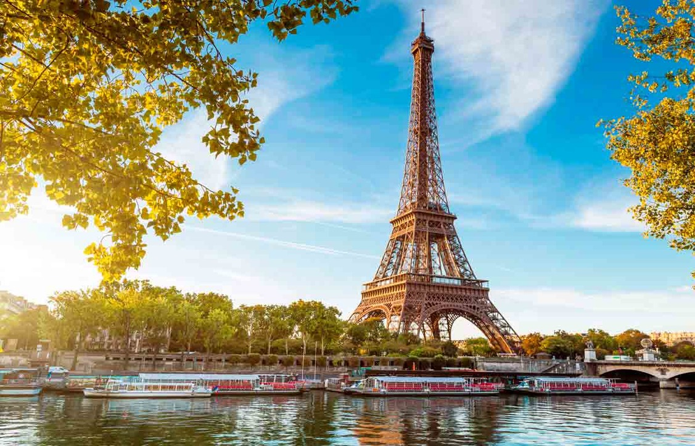

Эйфелева башня
О достопримечатеольности
Многие французы называют «первой леди Франции» отнюдь не супругу действующего президента. Это почётное звание
прочно закрепилось за сооружением, строительство которого, в своё время, вызвало бурную и неоднозначную реакцию
в обществе от искреннего восхищения до полного неприятия. На уютном зелёном ковре Марсова поля, напротив
живописных садов Трокадеро, уже без малого 130 лет возвышается безусловный и неоспоримый символ не только
Парижа, но и всей Франции – Эйфелева башня (La tour Eiffel). 18 тысяч кусков кованого железа и 2.5 миллиона
заклепок – этот, по словам поэта Жана Кокто, «красивый кружевной жираф» считается чудом архитектуры и привлекает
больше посетителей, чем любая другая платная туристическая достопримечательность в мире.
В рамках подготовки к проведению Всемирной выставки 1889 года, разместить которую планировалось в самом центре
Парижа, необходимо было срочно придумать нечто особенное для оформления главного входа. Из представленных более,
чем сотен художников и архитекторов вариантов специальная комиссия выбрала проект известного строителя мостов,
архитектора и специалиста по металлам Александра-Гюстава Эйфеля. Мог ли победитель предположить тогда, что
созданный им проект — Эйфелева башня получит столь масштабную мировую известность и навсегда впишет его имя в
историю Франции?
Многие с большим скептицизмом отнеслись к этой необычной и массивной железной конструкции. Известный французский
романист Ги де Мопассан, например, терпеть её не мог и искренне считал «уродующей лицо Парижа». А немецкий
генерал, военный губернатор Парижа, в 1944 году отказался выполнить приказ Гитлера и снести её. О вкусах, как
известно, не спорят, тем не менее, с момента её появления, башню посетили не менее 250 миллионов человек со
всего мира, и ежегодный людской поток не убывает.
Первоначально предполагалось, что Эйфелева башня сможет простоять 20 лет, после чего её будет необходимо
демонтировать. Однако, уже через несколько лет о демонтаже не могло быть и речи. К тому же, очень удобно было
использовать её в качестве ретранслятора, благодаря антенне, установленной на вершине в 1957 году. Даже сегодня
эта антенна продолжает обеспечивать качественное теле- и радиовещание. Однако, башня требует тщательного ухода –
только на одно перекрашивание её каждые семь лет требуется 60 тонн краски.
Вместе с антенной высота башни составляет 324 метра, а весит она больше 10 тысяч тонн. При сильном ветре она
раскачивается со средней амплитудой 6-7 сантиметров. Её опорные столбы чётко сориентированы по сторонам света,
на них начертаны имена 72 инженеров, учёных и математиков, каждый из которых внёс свой вклад в её строительство.
На самую высокую точку башни ведёт лестница из 1665 ступеней и восемь лифтовых шахт.
Внутренние помещения башни распределены по трём уровням. На первой площадке, на высоте всего 57 метров,
располагается выставка, посвящённая истории возникновения башни и её усовершенствованию, сувенирные магазины и
даже крошечное почтовое отделение, в котором можно отправить письмо или открытку с уникальным почтовым
штемпелем: Эйфелева башня. Однако, главной «фишкой» здесь является не скользкий стеклянный пол в открытой части
конструкции – впечатления не для слабонервных. На втором уровне, на высоте 125 метров, расположен знаменитый
ресторан «Жюль Верн» (Le Jules Verne), который предлагает посетителям блюда современной французской кухни и
великолепную круговую панораму Парижа. Третий и последний уровень находится на высоте 276 метров. Здесь можно
выпить шампанского в баре «Шампань» (Champagne Bar) и любоваться Парижем, лежащим буквально под вашими ногами.
Особенно захватывающий вид открывается отсюда в тёмное время суток, когда город и сама башня сверкают огнями
иллюминации. Кстати, здесь же на последнем уровне есть «секретная» квартира. Эйфель, работая над проектом, ловко
включил в него и частные апартаменты для себя, здесь он принимал знаменитых гостей, таких как Томас Эдисон.
Квартира доступна для осмотра.
Обязательно побывайте на Эйфелевой башне или хотя бы прогуляйтесь у её подножия – поездка в Париж не может быть
вам засчитана, если вы не засвидетельствовали «железной леди» свое почтение.
Забавный факт: художник, а по совместительству ловкий мошенник Виктор Люстиг дважды умудрялся «продать» башню
как металлолом.
Как проехать
Ближайшие к Эйфелевой башне станции парижского метро – «Трокадеро» (Trocadéro) на линии 9, «Эколь Милитер»
(École militaire) на линии 8, и Бир-Хакейм (Bir-Hakeim) на линии 6. Стоимость одноразового билета на метро
составляет 1.9 евро.
Из Международного аэропорта Шарль-де-Голль (Paris CDG) до Марсова поля можно добраться на скоростных поездах или
автобусах. Из аэропорта в сторону центра столицы каждые 10 минут отправляются электрички «RER». Сначала по линии
«В» нужно доехать до станции St-Michel/Notre Dame. Этот отрезок пути займёт 40 минут, стоимость билета – 11 EUR.
На этой станции следует пересесть на электричку «RER» линии «С» и через 10 минут выйти на станции Champ de
Mars/TourEiffel, которая находится в 500 метрах от башни. Стоимость билета – от 1 до 5 EUR.
Автобусы «Le Bus Direct» (линия 2) отправляются из аэропорта каждые полчаса и через 40 минут прибывают на
станцию Порт-Майо (Porte Maillot). Билет стоит от 18 до 20 EUR. Отсюда нужно пройти 600 метров до станции «Андре
Маруа» (Andre Maurois) и автобусным маршрутом №82 за 15 минут и оплату в размере 3 EUR доехать до остановки
«Марсово поле» (Champ De Mars).
Такси из аэропорта Шарль-де-Голль обойдётся в сумму от 60 EUR.
Из Международного аэропорта Орли (Paris Orly Airport) в нужном направлении каждые полчаса ходят автобусы «Le Bus
Direct» (линия 1). Дорога займёт около 50 минут, билет стоит от 13 до 20 EUR.
Можно также воспользоваться скоростным трамваем и городской электричкой. Остановка трамвая расположена в 450
метрах от аэропорта. Маршрутом №7 за 6 минут и 2-3 EUR нужно доехать до остановки Ренжис-ля-Фратернель (Rungis
La Fraternelle). Отсюда каждый час до остановки Элисейские поля/Эйфелева башня (Champ De Mars/Tour Eiffel) ходят
электрички «Transilien» линии «С». Путь займёт 40 минут, цена билета – от 5 до 8 EUR.
Поездка из Орли до Марсова поля на такси обойдётся от 30 EUR.
Стоимость аренды автомобилей в аэропортах Парижа колеблется в пределах от 40 EUR в сутки.
Иван Иванов
Отличный сайт, очень полезная информация, пользуюсь каждый день.